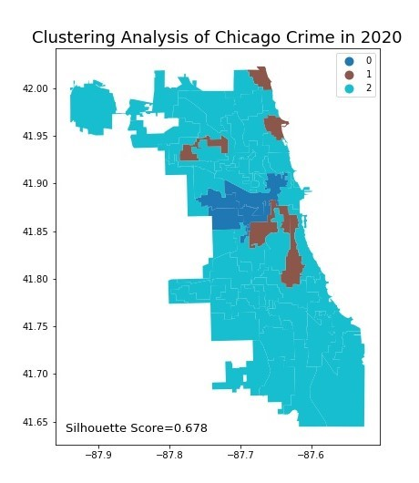

Analysis
According to research by Liu, Song & Xi (2016), population mobility increases the chance of crime. This part aims to visualize the population changes of wards from 2010 to 2016 to analyze whether there is a high number of crimes in areas with large population movements.

|
Clustering analysis of Chicago crime

|
 |
2010
Cluster 0: Battery，Narcotics，Theft in the west and south of Chicago
Cluster 1: Theft，Battery，Criminal Damage in the north, southwest and far south of Chicago
Cluster 2: Theft，Deceptive Practice，Battery in the centre of Chicago
2020
Cluster 0: Battery，Theft，Narcotics in the west of Chicago
Cluster 1: Theft，Battery，Deceptive Practice in the north and centre of Chicago
Cluster 2: Battery，Theft，Assault all over the Chicago
The results of clustering analysis of Chicago crime is shown in the map. There are 3 clusters in each year and the major crime type(top 3 crime type) and their geographical characteristics of each cluster can be found below.
Cluster 1: Theft，Battery，Deceptive Practice in the north and centre of Chicago
Cluster 2: Battery，Theft，Assault all over the Chicago